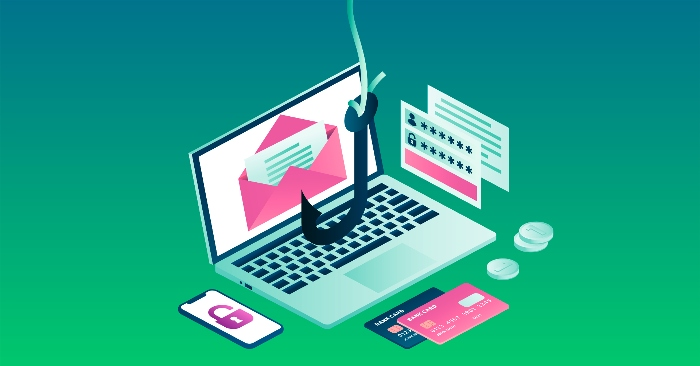
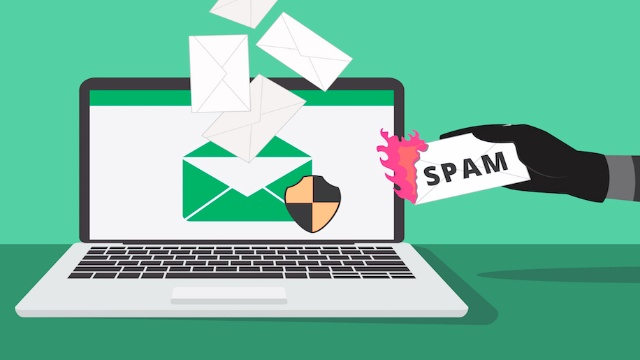

Spam and phishing emails are nothing new. But in the past few years, they have evolved, becoming increasingly sophisticated and harder to spot. Most emails that claim to come from businesses or organizations, but that aren’t, are phishing emails. The email senders are criminals who use phishing emails to steal your valuable information or money. These emails are often referred to as “SPAM” because they masquerade as legitimate emails and are sent out by criminals hoping you will click on a link in the email.
Here are 5 anti-phishing principles that should help keep you safe.
Phishing attacks exploit human nature to trick people into believing things the sender wants. Popular attacks include creating a sense of urgency and offering the target something of value, which increases the probability that the target will follow the instructions of the hacker without validating the message.
Phishers often make use of current events or impersonate somebody you know by creating events like a fake package delivery notification. Supplied with vital product, info, or chances related to a current event or creating an environment in which the recipient believes it has been dishonored (like a fake package delivery notification), these emails increase their probability of getting clicks.

Phishing attacks do not target one individual in a company. Instead, the threat commonly sends a sub group of emails, starting from the firm's directory in alphabetical order and progressing to the payroll. This is due to the fact that the attacker only needs an individual to fall prey to a digital conceivable attack in order to be successful, so a widespread tactic enhances their chances.
To be on the safe side, training employees to report suspicious emails will lead to easier detection and elimination of phishing attacks. Even if just one employee ignores these communications, another may. The IT department takes notice of the culprit and produces necessary actions based on this analysis to shield users from attacks.
Email is among a typical communication process for businesses and organizations, and businesses should have an email security policy. The organization's email security policy should detail user interfaces and acceptable and unacceptable activities. In addition, the policy should mention how to respond to suspected attacks (i.e. reporting suspicious emails to IT and deleting the associated phishing content).
The organization's email policy ought to be refreshed routinely as part of info protection training from the business enterprise. By repeating this, it helps to make sure employees are aware of the policy and the requirements of it.

A main target of cybersecurity specialists is the disclosure of a user's personal data, such as credentials for Google Docs. Information about a consistent user name and password among different online accounts makes it easier for cybercriminals to access different websites.
For this reason, credential theft is a common target of phishing emails. It’s important for your employees to eliminate the influence of phishing emails and to be conscious of the need for strong passwords for all their accounts. These include the need to use unique, strong passwords for all their accounts, to never share passwords (especially by email), and never to enter a password on a webpage that came from a suspicious source.
Cyberattacks will continue to exploit employees without a business's best efforts. These attacks are becoming more complex and can trick even the best cybersecurity experts.Individualized education can help to reject far fewer successful phishing attacks to your business. But many emails will slip past.
To protect the organization from spoofing, AI-based anti phishing software is used to monitor and detect phishing attacks across all of the organization's communication channels, such as email, desktop applications, and more.
In conclusion, differentiating your brand from other firms and explaining your company's mission should be the first steps to creating a strong phishing response strategy. Once you've done that, it's important to figure out what type of phishing attacks are most likely to target you. Finally, a comprehensive phishing defense strategy should include training for employees so they're better prepared to recognize and respond to phishing attacks.